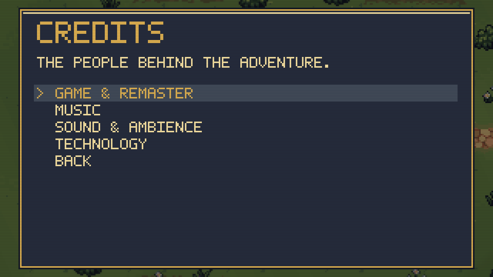
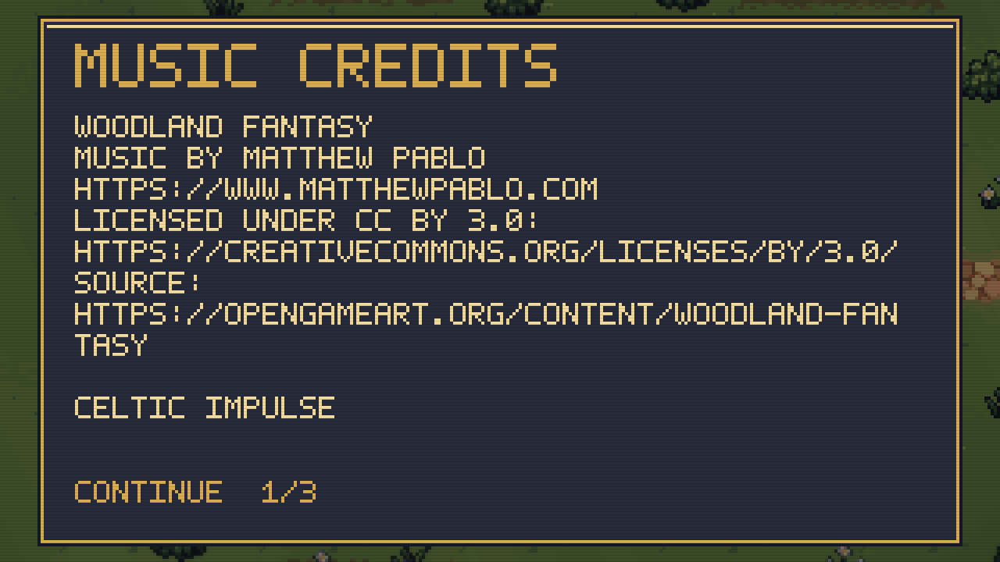
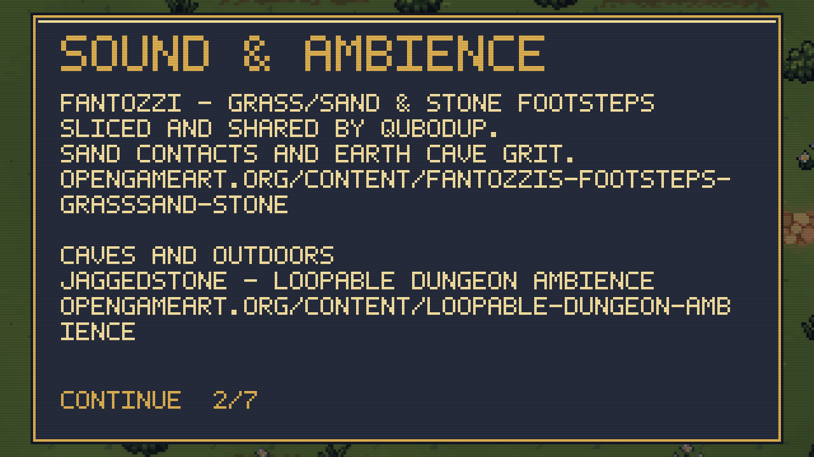
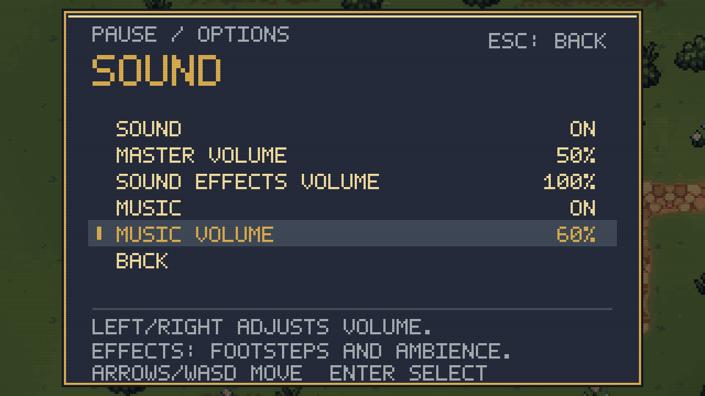

Two recorded music tracks with separate effects/music volumes. Credits cover the original game, icosium labs, musicians, audio contributors and runtime projects.
641 core checks, 129 focused menu/music checks and 38 Maynard ambience checks passed. Local build only; personal save files unchanged.



